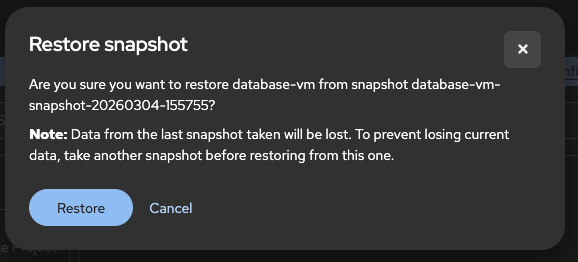

Creating and Managing VM Snapshots
Overview
VM snapshots capture the state of a virtual machine at a specific point in time, including its disks and optionally its memory state. Snapshots enable quick rollback after failed updates, safe testing of changes, and creation of restore points before maintenance operations.
This tutorial covers creating, managing, and restoring VM snapshots in OpenShift Virtualization.
Prerequisites
-
OpenShift 4.18+ with OpenShift Virtualization installed
-
A running or stopped VM to snapshot
-
Storage class that supports CSI snapshots
-
ocandvirtctlCLI tools installed
Verify Snapshot Storage Support
Before creating snapshots, verify your storage supports CSI snapshots:
oc get volumesnapshotclassExample output:
NAME DRIVER DELETIONPOLICY AGE
csi-hostpath-snapclass hostpath.csi.k8s.io Delete 30d
ocs-storagecluster-rbdplugin-snapclass openshift-storage.rbd.csi.ceph.com Delete 30dIf no VolumeSnapshotClass exists, contact your cluster administrator to configure one for your storage provider.
Understanding VM Snapshots
Snapshot Resources
OpenShift Virtualization uses two primary resources for snapshots:
- VirtualMachineSnapshot
-
The request to create a snapshot of a VM. Contains references to the source VM and snapshot configuration.
- VirtualMachineSnapshotContent
-
The actual snapshot data, automatically created when a VirtualMachineSnapshot is processed. Contains references to the underlying VolumeSnapshots.
Online vs Offline Snapshots
| Type | Description | Requirements |
|---|---|---|
Offline Snapshot |
Snapshot taken while VM is stopped. Guaranteed consistent state. |
VM must be stopped. |
Online Snapshot |
Snapshot taken while VM is running. Requires filesystem quiescing for consistency. |
QEMU guest agent installed and running in the VM. |
| For critical workloads, prefer offline snapshots or ensure the QEMU guest agent is installed for online snapshots to guarantee filesystem consistency. |
Online snapshots have a default timeout of five minutes. If the snapshot does not complete within that window, its status is set to Failed, the filesystem is thawed, and the VM resumes normal operation. You can adjust this deadline by setting the failureDeadline field in the VirtualMachineSnapshot spec (e.g., failureDeadline: 10m).
Snapshot Indications
After an online snapshot completes, the status.indications field reports how the snapshot was taken:
| Indication | Meaning |
|---|---|
|
The VM was running during snapshot creation. |
|
The QEMU guest agent successfully quiesced the filesystem. The snapshot is application-consistent. |
|
The QEMU guest agent was not installed or not ready. The snapshot is crash-consistent only. |
|
The guest agent attempted to quiesce but failed. The snapshot was created but application consistency is not guaranteed. |
Check indications for a snapshot:
oc get virtualmachinesnapshot <snapshot-name> -n vm-snapshots -o json | jq '.status.indications'Example output:
[
"GuestAgent",
"Online"
]Creating Snapshots
Creating a Snapshot via Web Console
-
Navigate to Virtualization → VirtualMachines
-
Click on the VM you want to snapshot
-
Go to the Snapshots tab

-
Click Take snapshot

-
Enter a name and optional description for the snapshot
-
Click Save
The snapshot status is displayed in the Snapshots tab once creation completes.

Creating a Snapshot via CLI
Create a VirtualMachineSnapshot resource:
apiVersion: snapshot.kubevirt.io/v1beta1
kind: VirtualMachineSnapshot
metadata:
name: database-vm-snapshot-01
namespace: vm-snapshots
spec:
source:
apiGroup: kubevirt.io
kind: VirtualMachine
name: database-vmApply the snapshot:
oc apply -f vm-snapshot.yamlVerify Snapshot Creation
Check the snapshot status:
oc get virtualmachinesnapshot -n vm-snapshotsExample output:
NAME SOURCEKIND SOURCENAME PHASE READYTOUSE CREATIONTIME ERROR
database-vm-snapshot-20260304-155755 VirtualMachine database-vm Succeeded true 8mFor detailed status:
oc describe virtualmachinesnapshot <snapshot-name> -n vm-snapshotsExample output:
Name: database-vm-snapshot-20260304-155755
Namespace: vm-snapshots
API Version: snapshot.kubevirt.io/v1beta1
Kind: VirtualMachineSnapshot
Spec:
Failure Deadline: 600s
Source:
API Group: kubevirt.io
Kind: VirtualMachine
Name: database-vm
Status:
Conditions:
Reason: Operation complete
Status: False
Type: Progressing
Reason: Ready
Status: True
Type: Ready
Indications:
GuestAgent
Online
Phase: Succeeded
Ready To Use: true
Snapshot Volumes:
Excluded Volumes:
cloudinitdisk
Included Volumes:
rootdiskKey status fields:
-
Phase:
InProgress,Succeeded, orFailed -
ReadyToUse:
truewhen snapshot can be used for restore (shown as Ready in the web console Status column) -
Error: Contains error message if snapshot failed
Managing Snapshots
Listing Snapshots
List all snapshots for a namespace:
oc get virtualmachinesnapshot -n vm-snapshotsList snapshots across all namespaces:
oc get virtualmachinesnapshot -AView snapshots in web console:
-
Navigate to the VM’s details page
-
Click the Snapshots tab
-
View all snapshots with their status and creation time
Viewing Snapshot Details
oc describe virtualmachinesnapshot <snapshot-name> -n vm-snapshotsTo see the underlying VolumeSnapshots:
oc get virtualmachinesnapshotcontent -n vm-snapshotsExample output:
NAME READYTOUSE CREATIONTIME ERROR
vmsnapshot-content-cd166db8-00be-4aa9-972e-dea669527bfd true 8moc get volumesnapshot -n vm-snapshotsExample output:
NAME READYTOUSE SOURCEPVC RESTORESIZE SNAPSHOTCLASS CREATIONTIME AGE
vmsnapshot-cd166db8-00be-4aa9-972e-dea669527bfd-volume-rootdisk true database-vm-disk 30Gi lvms-vg1 8m 8mRestoring from Snapshots
Restoring a VM from a snapshot reverts the VM’s disks to the state captured in the snapshot.
The VM must be stopped before restoring from a snapshot. You can automate this by setting targetReadinessPolicy: StopTarget in the VirtualMachineRestore spec. Other options include FailImmediate (default), WaitGracePeriod (waits up to 5 minutes), and WaitEventually (waits indefinitely). See the official documentation for details.
|
Restore via Web Console
-
Navigate to the VM’s details page
-
Ensure the VM is stopped (stop it if running)
-
Go to the Snapshots tab
-
Click the kebab menu next to the snapshot you want to restore
-
Select Restore VirtualMachineSnapshot

-
Confirm the restore operation

Restore via CLI
Create a VirtualMachineRestore resource:
apiVersion: snapshot.kubevirt.io/v1beta1
kind: VirtualMachineRestore
metadata:
name: database-vm-restore-01
namespace: vm-snapshots
spec:
target:
apiGroup: kubevirt.io
kind: VirtualMachine
name: database-vm
virtualMachineSnapshotName: database-vm-snapshot-01Apply the restore:
oc apply -f vm-restore.yamlVerify Restoration
Check the restore status:
oc get virtualmachinerestore -n vm-snapshotsExample output:
NAME TARGETKIND TARGETNAME COMPLETE RESTORETIME ERROR
database-vm-restore-01 VirtualMachine database-vm true 2mFor detailed status:
oc describe virtualmachinerestore database-vm-restore-01 -n vm-snapshotsAfter restoration completes, start the VM:
virtctl start database-vm -n vm-snapshotsVerify the VM is running with the restored state:
oc get vm database-vm -n vm-snapshotsDeleting Snapshots


Storage Considerations
CSI Driver Requirements
VM snapshots require a CSI (Container Storage Interface) driver that supports the snapshot feature. Common supported storage solutions include:
-
Red Hat OpenShift Data Foundation (ODF)
-
AWS EBS CSI
-
Microsoft Azure Disk CSI
-
Google Cloud Persistent Disk CSI
-
LVM Storage (LVMS), when using a thin-pool device class
-
VMware vSphere CSI
-
NetApp Trident
-
Pure Storage
-
Dell CSI drivers
VolumeSnapshotClass Configuration
The VolumeSnapshotClass determines how snapshots are created and managed. Verify your storage class has a corresponding snapshot class:
# Check storage class
oc get storageclass
# Check corresponding snapshot class
oc get volumesnapshotclassIf snapshots fail, verify the snapshot class matches your storage provisioner.
Storage Space
Snapshots consume storage space. Consider:
-
Copy-on-write: Most CSI drivers use copy-on-write, so initial snapshot size is small
-
Growth over time: As the VM’s disks change, snapshot storage grows
-
Multiple snapshots: Each snapshot consumes additional space
-
Cleanup policy: Regularly delete old snapshots to reclaim space
oc get volumesnapshot -n vm-snapshots -o wideExample output:
NAME READYTOUSE SOURCEPVC RESTORESIZE SNAPSHOTCLASS CREATIONTIME AGE
vmsnapshot-cd166db8-00be-4aa9-972e-dea669527bfd-volume-rootdisk true database-vm-disk 30Gi lvms-vg1 9m 9mTroubleshooting
Snapshot stuck in InProgress
Problem: VirtualMachineSnapshot remains in InProgress phase.
Possible causes:
-
Online snapshot timed out (default 5-minute
failureDeadline) -
QEMU guest agent not responding
-
Storage provider is slow or unresponsive
Solutions:
oc describe virtualmachinesnapshot <snapshot-name> -n <namespace>Check the status.conditions and status.indications fields. If the snapshot failed due to timeout, consider increasing failureDeadline in the snapshot spec or taking an offline snapshot instead.
Snapshot shows NoGuestAgent or QuiesceFailed
Problem: Snapshot completes but indications show NoGuestAgent or QuiesceFailed, meaning the snapshot is crash-consistent only.
Solution: Install and start the QEMU guest agent inside the VM:
# For Fedora/RHEL VMs
sudo dnf install -y qemu-guest-agent
sudo systemctl enable --now qemu-guest-agentVerify the agent is running:
oc get vmi database-vm -n vm-snapshots -o jsonpath='{.status.conditions}' | jq '.[] | select(.type=="AgentConnected")'Restore fails because VM is still running
Problem: VirtualMachineRestore fails with an error indicating the target VM is not stopped.
Solution: Stop the VM before restoring, or set targetReadinessPolicy: StopTarget in the VirtualMachineRestore spec to have the controller stop it automatically:
virtctl stop database-vm -n vm-snapshots
oc wait vm database-vm -n vm-snapshots --for=jsonpath='{.status.printableStatus}'=Stopped --timeout=120sSnapshot fails with no VolumeSnapshotClass
Problem: Snapshot creation fails because no VolumeSnapshotClass matches the storage provisioner.
Solution: Verify a VolumeSnapshotClass exists for your storage class:
oc get storageclass -o jsonpath='{range .items[*]}{.metadata.name}{"\t"}{.provisioner}{"\n"}{end}'
oc get volumesnapshotclass -o jsonpath='{range .items[*]}{.metadata.name}{"\t"}{.driver}{"\n"}{end}'The driver in the VolumeSnapshotClass must match the provisioner in the StorageClass. If no matching VolumeSnapshotClass exists, create one or contact your cluster administrator.
Cleanup
Remove the resources created in this tutorial:
oc delete virtualmachinerestore --all -n vm-snapshots
oc delete virtualmachinesnapshot --all -n vm-snapshotsVerify cleanup:
oc get virtualmachinesnapshot -n vm-snapshots
oc get volumesnapshot -n vm-snapshotsSummary
In this tutorial you learned:
-
How VM snapshot resources work in OpenShift Virtualization
-
The difference between online and offline snapshots and snapshot indications
-
How to create snapshots via web console and CLI
-
How to manage, list, and delete snapshots
-
How to restore VMs from snapshots
-
Storage requirements and considerations for snapshots
-
Common troubleshooting techniques for snapshot operations
See Also
-
Using virtctl for VM Management - CLI commands for VM management
-
Creating Custom OS Images and Golden Images - Creating reusable VM images
-
Cloning Virtual Machines for Rapid Deployment - Clone VMs, including creating clones from snapshots
-
Backup and Restore by Using VM Snapshots - Red Hat Documentation